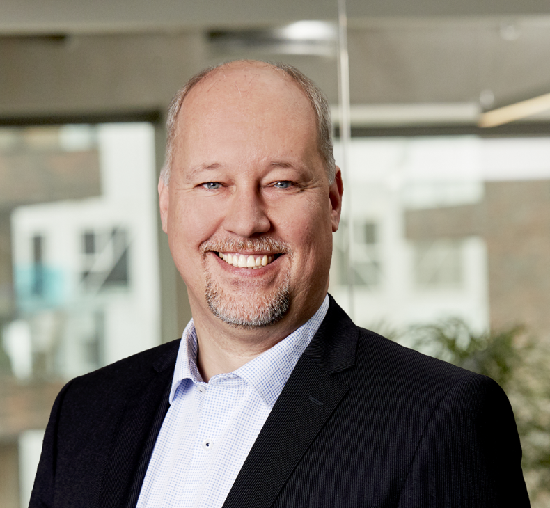

Scaling B2B SaaS Companies
My name is Flemming Goldbach and I support SaaS companies on their 0 to €25M ARR journey

Services I Provide 12 Years of ScalingEarly-stage B2B SaaS companies are on an exciting jounrey. Fueled by deep domain knowledge and passion from the founders, they are also often unstructured and lacking the experience to drive functional excellence in product & engineering. This introduces risks when growing and prevents smooth scaling of the organization and processes past the early signs of product-market fit.
Examples of this can be misalignment between product features and market demands, ineffecient product development processes and rising costs, leading to missed opportunities for ARR acceleration and market expansion when scaling.
I provide fractional product & engineering leadership as well as strategic advisory tailored to scaling SaaS companies. Acting as embedded leader or advisor, I align product strategies with business goals, streamline product & engineering execution, and guide founders through key scaling decisions and help them transform while we perform.
By leveraging experience in this stage we can mitigate risks, drive functional excellence, and unlock growth potential. Using my experience in product & engineering leadership from previous scaling journeys, I support founders and the team in building scalable, successful SaaS businesses. For investors, this means less risk, a faster ARR growth, and a a more smooth path to maximizing ROI.
Let's unlock the full potential of your SaaS company together.
Work with you to develop a clear and actionable roadmap that aligns with your business goals. Ensuring that your product strategy is robust and adaptive to market changes.
Analysis and guidance to optimize pricing models, including tiered pricing, freemium options, and upsell strategies. Track and work strategicly with ARPA in product development.
Ensuring scalable and high-performing product organizations, through empowerment, organization and skills development.
Ensure excellence in product delivery to incorporate faster iterations with streamlined processes and stakeholder alignment.
Ensuring cost-effectiveness and scalable access to skills by setting up processes and organization to fully leverage nearshore/offshore team members.
Mentor, coach and guide the product & engineering team, helping them transform while they perform and achieve functional excellence to support further scale.
For some, the starting point might be an in-depth review of the product & eningeering function, resulting in a diagnostic report and a comprehensive roadmap for improvement.
I leverage my experience to provide sparring to your and your teams on an on-demand approach. This allows you to leverage my expertise for ad-hoc questions and strategic discussions as needed.
I integrate into your team for 1 to 3 days a week over a specified period. I am available for strategic and operational guidance and to drive the transformations with your team and coach them along the way.
September 2023 to November 2024 - ARR: 2,3 mio. EUR to 3,0 mio. EUR
Responsible for the product organization and end-to-end product process (12 people total across Denmark and Romania).
Led the product organization supporting the Founders and Head of Product in establishing scalable product organization and processes.
Expanded product-market fit and ICP from Privacy focused GRC to Privacy and Information Security focused GRC.
May 2019 to June 2023 - ARR: 2,1 mio. EUR to 21 mio. EUR
Responsible for the product organization and end-to-end product process (60 people total across Denmark, Poland, Romania, and UK).
Took over the product organization after the co-founder. Built and scaled Product management, product engineering and product marketing functions from 17 to 60 people.
Established Freemium go-to-market product version and supported new product-led growth sales channel.
April 2016 to May 2019 - ARR: 0,5 mio. USD to 8 mio. USD
Responsible for the product development organization (25 people total across two locations in Denmark and one in Bangladesh).
Supported the transformation of go-to-market channels from direct sales to national (DK) customers with 500-2.000 users, to partner sales to international enterprise customers across Europe and the US with 1.500-120.000 users.
Grew product development organization from 9 to 25. Established offshore development team in Dhaka, Bangladesh. Established UX and Product Marketing function.
May 2013 to April 2016 - from nothing to 3 products with paying customers
Established product & engineering organization from nothing to 8 people located in Denmark and Bangladesh.
Built up Office 365 SaaS products business area targeting SMB and mid-market B2B. Built 2 products with sales-led go-to-market, and 1 product with product-led go-to-market in Office 365 App Store.
In 2015 Adactit was recognized and rewarded as Worldwide Microsoft Cloud Partner of the Year.
"Flemming scaled up our outsourced product team of 17 people in 1 country to a fully integrated business unit of 60 people across 5 countries. His organizational skills, attention to detail and cross team collaboration was instrumental in our continued success and ultimately the achievement of our customers' goals and ambitions."
– Lars Vestergaard, CEO, Zensai
"Flemming restructured the way product & engineering delivered product and adjusted our workflows, to make sure that we got a better integration of our teams in Romania and Poland. This led to a higher engagement, better collaboration and increased knowledge build-up."
– Bobby Nielsen, CTO, Wired Relations
Scaling a SaaS business can be tough, but you don't have to do it alone. Let's talk about where you want to go—and how I can help you get there.